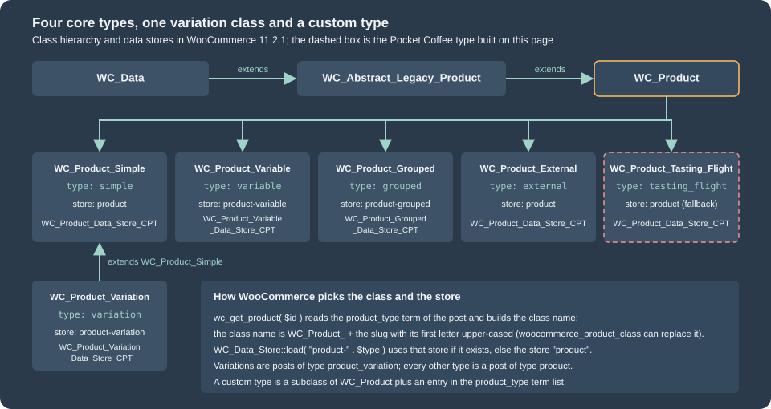
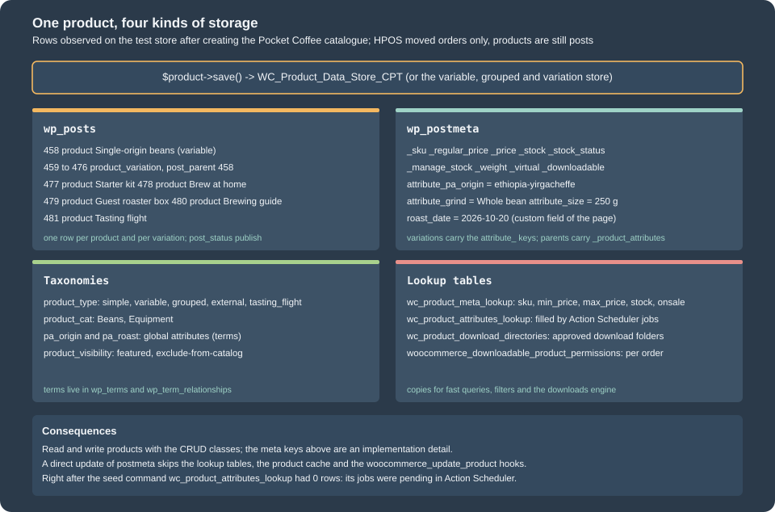
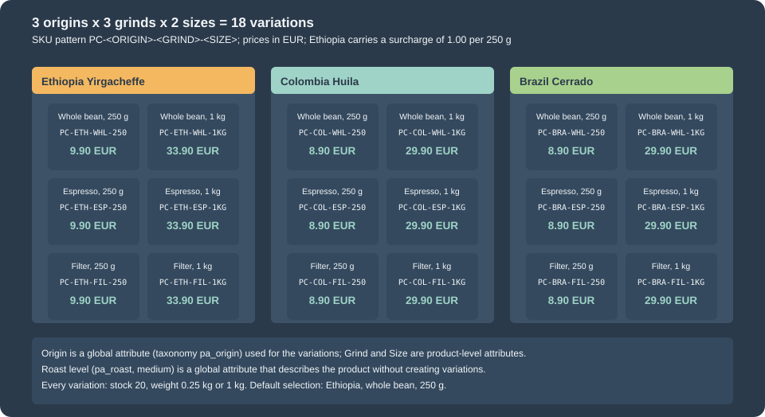
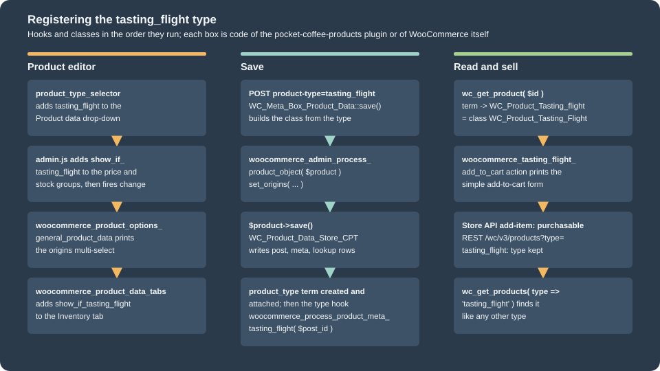
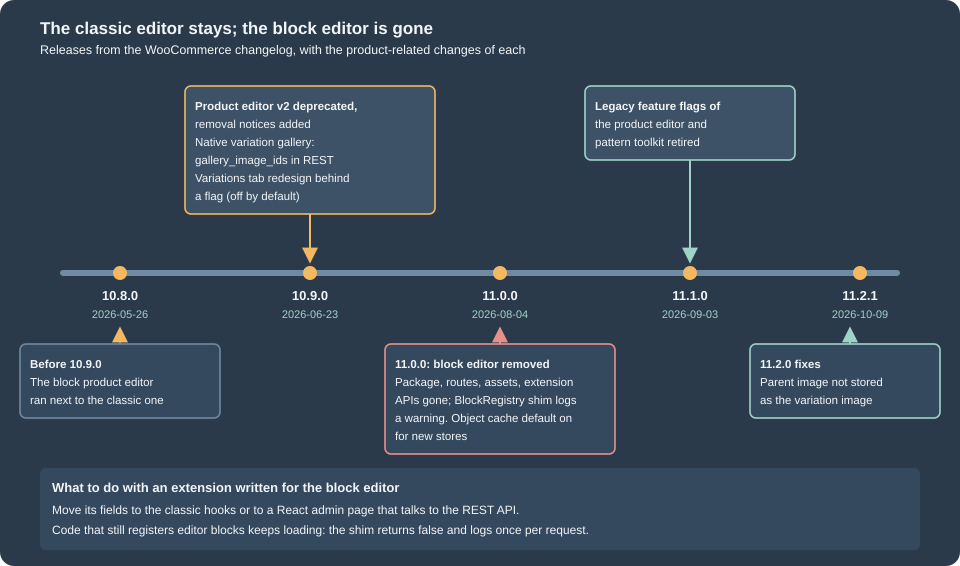

Products and Product Types
|
This content was generated with the assistance of AI and should be verified against the official documentation of each platform before being relied on in production. This section’s bibliography lists the reference material consulted while preparing these pages. |
A WooCommerce product is not one thing. It is a post with a type, and the type decides which class loads it, which fields the editor shows, how it is priced, whether it can go into a cart and what the storefront draws instead of the add-to-cart button. Four types ship with WooCommerce (simple, variable, grouped and external), two flags (virtual and downloadable) change what a simple product needs from the shop, a variation is a child of a variable product, and an extension can add a type of its own. This page covers all of them with the catalogue of the Pocket Coffee shop: the variable product "Single-origin beans" with 18 variations, the simple "Starter kit", a grouped "Brew at home", an external "Guest roaster box", a downloadable "Brewing guide" and a custom type, the "Tasting flight". It then goes into attributes, the fields of the classic product editor, the native variation galleries that WooCommerce 10.9.0 added, queries, the way each type behaves in the REST API, the Store API and WP-CLI, and what happened to the block product editor, which was deprecated in 10.9.0 and removed in 11.0.0.
The page was written against WooCommerce 11.2.1 (the stable release of 2026-10-09; 11.3.0-beta.1 followed on 2026-10-26) on
WordPress 7.1.3, PHP 8.3.36 and MariaDB 11.8.9, and checked on 2026-10-27. Products work the same on every hosting plan and in
the free plugin; subscription, bundle and booking products come from paid extensions that use the mechanism of the custom type
section (see Subscriptions, Memberships and Bookings).
Everything below was run on the lab store with the plugin pocket-coffee-products: the catalogue is created with CRUD objects
and a WP-CLI command, the editor was driven in a headless Chromium, and the storefront, the REST API, the Store API and
WP-CLI were called for each type. The CRUD classes themselves (getters, setters, data stores, meta) are the subject of
CRUD Objects and Data Stores; the hooks used here follow
Hooks: Actions and Filters; the storefront blocks that list products
are in Product Collection and Blocks; the plugin skeleton is in
Extension Development. PHP language details are in
PHP classes and objects.
The product model
Types, classes and where a product is stored
WooCommerce stores a product as a row of wp_posts (post type product, or product_variation for a variation, with the parent
in post_parent), its fields as rows of wp_postmeta, its type, categories, tags, global attributes and visibility flags as
terms, and copies of some fields in lookup tables. HPOS changed that for orders only; products are still posts. The type is the
term of the product_type taxonomy attached to the product, and wc_get_product() reads it to choose the class.

| Type | Class | What it is | How it is bought |
|---|---|---|---|
|
|
One purchasable item with its own price, stock, shipping data and SKU. |
Add to cart; Store API |
|
|
A parent that holds attributes and a list of variations; the parent has no price of its own. |
The shopper chooses attribute values; Store API |
|
|
A list of child products shown together, each with its own quantity. |
Through the children; the group itself is not purchasable ( |
|
|
A product page whose button links to a URL on another site. |
Never in the cart; the button submits to |
|
|
One combination of attribute values of a variable product. |
Through the parent; the cart line is the variation. |
The slugs are the constants of Automattic\WooCommerce\Enums\ProductType (SIMPLE, VARIABLE, GROUPED, EXTERNAL,
VARIATION); use them instead of string literals. ProductType::get_all() (added in 10.9.0) returns all five including the
variation, which is not a type a merchant can choose; wc_get_product_types() returns the four selectable types as a slug and
label map and is filterable, so it also contains the types that extensions registered (the filter is product_type_selector).
Two flags change a simple product without changing its type: virtual (no shipping: the Shipping tab disappears and
needs_shipping() is false) and downloadable (the product carries files). A product can be both, and the lab store has one.
The products of the lab catalogue, printed by a short snippet after the seed command ran:
<?php
// One line per Pocket Coffee product.
foreach ( array( 'PC-BEANS-PRD', 'PC-KIT-PRD', 'PC-GROUP-PRD', 'PC-GUEST-PRD', 'PC-GUIDE-PRD', 'PC-FLIGHT-PRD' ) as $sku ) {
$id = wc_get_product_id_by_sku( $sku );
$product = wc_get_product( $id );
$price = html_entity_decode( wp_strip_all_tags( preg_replace( '/<span class="screen-reader-text">.*?<\/span>/', '', $product->get_price_html() ) ) );
printf( "%d %-25s %-15s sku=%-14s price html: %s | purchasable: %s\n", $id, get_class( $product ), $product->get_type(), $product->get_sku(), $price, var_export( $product->is_purchasable(), true ) );
}458 WC_Product_Variable variable sku=PC-BEANS-PRD price html: €8.90 – €33.90 | purchasable: true
477 WC_Product_Simple simple sku=PC-KIT-PRD price html: €24.00 | purchasable: true
478 WC_Product_Grouped grouped sku=PC-GROUP-PRD price html: €8.90 – €24.00 | purchasable: false
479 WC_Product_External external sku=PC-GUEST-PRD price html: €12.00 | purchasable: false
480 WC_Product_Simple simple sku=PC-GUIDE-PRD price html: €4.00 | purchasable: true
481 WC_Product_Tasting_Flight tasting_flight sku=PC-FLIGHT-PRD price html: €12.00 | purchasable: trueThe price shown for a grouped product is the range of its visible children and the group is not purchasable; the external
product is not purchasable either, because its button leaves the shop. These are properties of the classes (is_purchasable()
returns false), which is why the Store API refuses them.
=== Where each piece of data lives

Two consequences matter for code. First, never read or write the meta keys directly: the CRUD classes keep the lookup tables,
the caches and the hooks consistent, and a direct update_post_meta( $id, '_price', ... ) skips all of them. The lookup table
wc_product_meta_lookup is rewritten on save and is what the shop queries for price and stock filters. The attributes lookup
table wc_product_attributes_lookup is updated by Action Scheduler jobs unless the option
woocommerce_attribute_lookup_direct_updates is yes (it was no on the lab store): right after the seed command it had no
rows and many woocommerce_run_product_attribute_lookup_update_callback actions were pending. The tool
Regenerate the product attributes lookup table in WooCommerce > Status > Tools rebuilds it. Second, the product object
cache: the feature product_instance_caching ("Cache Product Objects") is on by default for stores installed from 11.0.0 and
is off for older stores that upgrade; with it on, product objects are kept in the object cache, which is one more reason to go
through the CRUD classes.
Simple products
The Starter kit, a hand grinder plus 250 g of beans for 24.00 EUR, is the smallest useful product. The function that creates it is part of the catalogue file used by the whole page; the file is listed in full in the variable product section, and this is the part that builds the simple product:
function pocket_coffee_create_kit( string $sku_suffix = '' ): int {
$product = new WC_Product_Simple();
$product->set_name( 'Starter kit' );
$product->set_sku( 'PC-KIT' . $sku_suffix );
$product->set_regular_price( '24.00' );
$product->set_manage_stock( true );
$product->set_stock_quantity( 15 );
$product->set_weight( '0.9' );
$product->set_length( '24' );
$product->set_width( '14' );
$product->set_height( '10' );
$product->set_category_ids( array( pocket_coffee_category( 'Equipment', 'equipment' ) ) );
$product->set_status( 'publish' );
return $product->save();
}The fields every product has, in the order of the editor tabs, with the setter that writes them:
| Tab | Setters | Notes |
|---|---|---|
General |
|
Prices are strings. |
Inventory |
|
The stock status is |
Shipping |
|
Units come from the shop settings (the lab store prints pounds and inches). A virtual product has no shipping data. |
Linked products |
|
Upsells appear on the product page, cross-sells in the cart. |
Attributes |
|
See the attributes section. |
Advanced |
|
The purchase note goes into the order confirmation. |
Sidebar |
|
The visibility values are |
Setters and save() throw a WC_Data_Exception for invalid data (the output below shows a duplicate SKU, and the downloads section a refused file). The snippet below
runs the day-to-day operations on the lab store: stock changes, a low-stock threshold, a scheduled sale, the visibility flags
and a duplicate SKU.
<?php
// Stock, low stock and a scheduled sale on the Starter kit and one variation.
$variation_id = wc_get_product_id_by_sku( 'PC-ETH-WHL-250-PRD' );
$variation = wc_get_product( $variation_id );
echo 'stock before: ', $variation->get_stock_quantity(), ' ', $variation->get_stock_status(), "\n";
wc_update_product_stock( $variation, 2, 'decrease' );
echo 'after decrease 2: ', wc_get_product( $variation_id )->get_stock_quantity(), "\n";
wc_update_product_stock( $variation_id, 20, 'set' );
echo 'after set 20: ', wc_get_product( $variation_id )->get_stock_quantity(), "\n";
$kit_id = wc_get_product_id_by_sku( 'PC-KIT-PRD' );
$kit = wc_get_product( $kit_id );
$kit->set_low_stock_amount( 5 );
$kit->save();
echo 'low stock amount: ', wc_get_low_stock_amount( wc_get_product( $kit_id ) ), ' (shop default ', get_option( 'woocommerce_notify_low_stock_amount' ), ")\n";
$kit = wc_get_product( $kit_id );
$kit->set_sale_price( '19.00' );
$kit->set_date_on_sale_from( '2026-11-01' );
$kit->set_date_on_sale_to( '2026-11-30' );
$kit->save();
$kit = wc_get_product( $kit_id );
printf( "scheduled sale: price=%s regular=%s sale=%s on_sale=%s from=%s\n", $kit->get_price(), $kit->get_regular_price(), $kit->get_sale_price(), var_export( $kit->is_on_sale(), true ), $kit->get_date_on_sale_from() );
$kit->set_sale_price( '' );
$kit->set_date_on_sale_from( '' );
$kit->set_date_on_sale_to( '' );
$kit->set_featured( true );
$kit->set_catalog_visibility( 'search' );
$kit->save();
echo 'product_visibility terms: ', wp_json_encode( wp_get_object_terms( $kit_id, 'product_visibility', array( 'fields' => 'slugs' ) ) ), "\n";
$kit->set_featured( false );
$kit->set_catalog_visibility( 'visible' );
$kit->save();
try {
$duplicate = new WC_Product_Simple();
$duplicate->set_name( 'Duplicate' );
$duplicate->set_sku( 'PC-KIT-PRD' );
$duplicate->save();
} catch ( WC_Data_Exception $e ) {
echo 'duplicate SKU: ', $e->getErrorCode(), ' | ', $e->getMessage(), "\n";
}
echo 'wc_get_product_id_by_sku: ', wc_get_product_id_by_sku( 'PC-ETH-WHL-250-PRD' ), "\n";stock before: 20 instock
after decrease 2: 18
after set 20: 20
low stock amount: 5 (shop default 2)
scheduled sale: price=24.00 regular=24.00 sale=19.00 on_sale=false from=2026-11-01T00:00:00+00:00
product_visibility terms: ["exclude-from-catalog","featured"]
duplicate SKU: product_invalid_sku | Invalid or duplicated SKU.
wc_get_product_id_by_sku: 459The details worth remembering are all in that output. wc_update_product_stock( $product, $quantity, $operation ) changes the
stock in one database update (set, increase or decrease) and fires the stock hooks; setting stock_quantity and saving does not
protect against two requests overlapping. A scheduled sale is stored with its dates but is_on_sale() stays false and
get_price() keeps the regular price until the first day, which a recurring Action Scheduler action (woocommerce_scheduled_sales,
registered with as_schedule_recurring_action() in the source of 11.2.1, since the cron jobs moved to Action Scheduler in 10.1) turns into the sale price.
catalog_visibility and featured are not meta: they are terms of the product_visibility taxonomy (featured,
exclude-from-catalog, exclude-from-search, outofstock and the rated-N terms), which is why a product with visibility
search carries the term exclude-from-catalog. A SKU must be unique across products and variations;
wc_get_product_id_by_sku() finds the owner, and the WC_Data_Exception has the code product_invalid_sku.
Attributes
An attribute describes a product (origin, grind, size). It can be a global attribute, a taxonomy shared by all products whose
terms the shop can filter and archive, or a product-level attribute that exists only on one product. Both are objects of the class
WC_Product_Attribute, put into the product with set_attributes():
| Property | Meaning |
|---|---|
|
The attribute taxonomy id for a global attribute ( |
|
The taxonomy name ( |
|
Term ids for a global attribute, an array of strings for a product-level one. |
|
Order in the editor and on the product page. |
|
Show the attribute on the Additional information tab. |
|
The attribute defines variations. Only variable products use it. |
A global attribute is created with wc_create_attribute() and registered as the taxonomy pa_<slug> on the next request; the
catalogue code registers it immediately so that it can add terms in the same run. The snippet shows what the function refuses
and which types exist:
<?php
// What wc_create_attribute() refuses.
foreach ( array( 'Type', 'A very long attribute name that will not fit in the taxonomy', 'Origin' ) as $name ) {
$result = wc_create_attribute( array( 'name' => $name ) );
echo 'wc_create_attribute( ', $name, ' ): ', is_wp_error( $result ) ? $result->get_error_code() . ' | ' . $result->get_error_message() : 'created ' . $result, "\n";
}
echo 'slug limit in bytes: ', wc_get_attribute_slug_max_byte_length(), "\n";
echo 'attribute types: ', wp_json_encode( wc_get_attribute_types() ), "\n";
echo 'global attributes: ', implode( ', ', wp_list_pluck( wc_get_attribute_taxonomies(), 'attribute_name' ) ), "\n";
echo 'taxonomy of roast: ', wc_attribute_taxonomy_name( 'roast' ), ' (id ', wc_attribute_taxonomy_id_by_name( 'roast' ), ")\n";wc_create_attribute( Type ): invalid_product_attribute_slug_reserved_name | Slug "type" is not allowed because it is a reserved term. Change it, please.
wc_create_attribute( A very long attribute name that will not fit in the taxonomy ): invalid_product_attribute_slug_too_long | Slug "a-very-long-attribute-name-that-will-not-fit-in-the-taxonomy" is too long. Please use a shorter slug.
wc_create_attribute( Origin ): invalid_product_attribute_slug_already_exists | Slug "origin" is already in use. Change it, please.
slug limit in bytes: 29
attribute types: {"select":"Text"}
global attributes: origin, roast
taxonomy of roast: pa_roast (id 2)The slug limit is 29 bytes (WordPress limits taxonomy names to 32 and WooCommerce keeps three for pa_), some names are
reserved because WordPress uses them as query variables (type is one; WooCommerce keeps a list), and an existing slug is refused. The
only attribute type on the lab store is select. The type wc-visual (colour swatches, added behind the feature
wc-visual-attribute) is off by default; 11.1.0 made WooCommerce create nine default colour terms when a visual attribute is
created, and 11.0.0 refined the swatch editor.
The Pocket Coffee catalogue uses both kinds. Origin is global, so shoppers can filter the shop by origin; Roast level (pa_roast) is global and descriptive (it does not create variations); Grind and Size exist
only on the beans. The keys differ in a way that can trip code: for a product-level attribute get_attributes() and the
variation attribute meta use the sanitized name (grind), get_variation_attributes() uses the label (Grind), and the REST API
returns the slug Grind for the product and grind for the variation:
attributes: [["Origin", "pa_origin", true], ["Grind", "Grind", true], ["Size", "Size", true], ["Roast level", "pa_roast", false]]
variation attributes in REST: [["Origin", "pa_origin", "Ethiopia Yirgacheffe"], ["Grind", "grind", "Whole bean"], ["Size", "size", "250 g"]]Compare attributes by lower-cased sanitized names, not by label, when a product-level attribute is involved. The terms of
global attributes are ordinary WordPress terms (wp_insert_term(), term_exists()); Products > Attributes in the admin
manages the attributes and their terms.
Variable products and variations
A variable product is a parent with attributes flagged variation and one WC_Product_Variation per combination. The shopper
chooses a value of each variation attribute; the matching variation supplies the price, stock, SKU, image and shipping data.
Pocket Coffee sells one product with three variation attributes, 3 origins x 3 grinds x 2 sizes = 18 variations.

The catalogue file follows. pocket_coffee_create_beans() builds the attributes, the parent and the 18 variations;
the other functions create the remaining products and are used in the next sections. SKUs get a suffix because they must be
unique in the whole catalogue (the lab store appends -PRD).
<?php
/**
* Pocket Coffee catalogue built with the CRUD classes: one function per product type.
*
* @package PocketCoffee\Products
*/
defined( 'ABSPATH' ) || exit;
/**
* A global attribute (a taxonomy named pa_<slug>) with its terms.
*
* @param string $label Attribute label, for example "Roast level".
* @param string $slug Attribute slug without the pa_ prefix.
* @param string[] $terms Term names.
* @return array<string,string> Term slugs keyed by term name.
* @throws RuntimeException When the attribute cannot be created.
*/
function pocket_coffee_global_attribute( string $label, string $slug, array $terms ): array {
if ( ! wc_attribute_taxonomy_id_by_name( $slug ) ) {
$result = wc_create_attribute(
array(
'name' => $label,
'slug' => $slug,
'type' => 'select',
'order_by' => 'menu_order',
'has_archives' => false,
)
);
if ( is_wp_error( $result ) ) {
throw new RuntimeException( esc_html( $result->get_error_message() ) );
}
// The taxonomy is registered on the next request; register it now so terms can be added.
register_taxonomy( wc_attribute_taxonomy_name( $slug ), array( 'product' ) );
}
$taxonomy = wc_attribute_taxonomy_name( $slug );
$slugs = array();
foreach ( $terms as $name ) {
$existing = term_exists( $name, $taxonomy );
$term_id = $existing ? (int) $existing['term_id'] : (int) wp_insert_term( $name, $taxonomy )['term_id'];
$slugs[ $name ] = get_term( $term_id, $taxonomy )->slug;
}
return $slugs;
}
/**
* Term ids of a taxonomy for a list of slugs.
*
* @param string $taxonomy Taxonomy name, for example pa_origin.
* @param string[] $slugs Term slugs.
* @return int[]
*/
function pocket_coffee_term_ids( string $taxonomy, array $slugs ): array {
$terms = get_terms(
array(
'taxonomy' => $taxonomy,
'slug' => array_values( $slugs ),
'hide_empty' => false,
)
);
return array_map( 'intval', wp_list_pluck( $terms, 'term_id' ) );
}
/**
* A product attribute. An id above 0 is a global attribute; id 0 is a product-level (custom) attribute.
*
* @param int $id Attribute taxonomy id, or 0.
* @param string $name Taxonomy name (pa_origin) or the label of a custom attribute.
* @param array<int,mixed> $options Term ids for a global attribute, values for a custom one.
* @param int $position Position in the list.
* @param bool $variation Whether the attribute defines variations.
* @return WC_Product_Attribute
*/
function pocket_coffee_attribute( int $id, string $name, array $options, int $position, bool $variation ): WC_Product_Attribute {
$attribute = new WC_Product_Attribute();
$attribute->set_id( $id );
$attribute->set_name( $name );
$attribute->set_options( $options );
$attribute->set_position( $position );
$attribute->set_visible( true );
$attribute->set_variation( $variation );
return $attribute;
}
/**
* A product category by slug, created when missing.
*
* @param string $name Category name.
* @param string $slug Category slug.
* @return int Term id.
*/
function pocket_coffee_category( string $name, string $slug ): int {
$term = get_term_by( 'slug', $slug, 'product_cat' );
if ( $term ) {
return (int) $term->term_id;
}
return (int) wp_insert_term( $name, 'product_cat', array( 'slug' => $slug ) )['term_id'];
}
/**
* Variable product "Single-origin beans": 3 origins x 3 grinds x 2 sizes = 18 variations.
*
* @param string $sku_suffix Appended to every SKU (SKUs are unique across the catalogue).
* @return int Product id.
*/
function pocket_coffee_create_beans( string $sku_suffix = '' ): int {
$origins = pocket_coffee_global_attribute( 'Origin', 'origin', array( 'Ethiopia Yirgacheffe', 'Colombia Huila', 'Brazil Cerrado' ) );
$roast = pocket_coffee_global_attribute( 'Roast level', 'roast', array( 'Light', 'Medium', 'Dark' ) );
$codes = array(
'ETH' => 'Ethiopia Yirgacheffe',
'COL' => 'Colombia Huila',
'BRA' => 'Brazil Cerrado',
);
$grinds = array(
'WHL' => 'Whole bean',
'ESP' => 'Espresso',
'FIL' => 'Filter',
);
$sizes = array(
'250' => array(
'label' => '250 g',
'price' => 8.90,
'weight' => '0.25',
'units' => 1,
),
'1KG' => array(
'label' => '1 kg',
'price' => 29.90,
'weight' => '1',
'units' => 4,
),
);
$product = new WC_Product_Variable();
$product->set_name( 'Single-origin beans' );
$product->set_sku( 'PC-BEANS' . $sku_suffix );
$product->set_status( 'publish' );
$product->set_short_description( 'Specialty beans roasted in small batches.' );
$product->set_category_ids( array( pocket_coffee_category( 'Beans', 'beans' ) ) );
$product->set_attributes(
array(
pocket_coffee_attribute( wc_attribute_taxonomy_id_by_name( 'origin' ), 'pa_origin', pocket_coffee_term_ids( 'pa_origin', $origins ), 0, true ),
pocket_coffee_attribute( 0, 'Grind', array_values( $grinds ), 1, true ),
pocket_coffee_attribute( 0, 'Size', wp_list_pluck( $sizes, 'label' ), 2, true ),
// Describes the product without creating variations.
pocket_coffee_attribute( wc_attribute_taxonomy_id_by_name( 'roast' ), 'pa_roast', pocket_coffee_term_ids( 'pa_roast', array( $roast['Medium'] ) ), 3, false ),
)
);
$product->set_default_attributes(
array(
'pa_origin' => $origins['Ethiopia Yirgacheffe'],
'grind' => 'Whole bean',
'size' => '250 g',
)
);
$product_id = $product->save();
$position = 0;
foreach ( $codes as $origin_code => $origin_name ) {
foreach ( $grinds as $grind_code => $grind_name ) {
foreach ( $sizes as $size_code => $size ) {
// Ethiopia costs 1.00 more per 250 g.
$surcharge = 'ETH' === $origin_code ? 1.00 * $size['units'] : 0.0;
$variation = new WC_Product_Variation();
$variation->set_parent_id( $product_id );
$variation->set_attributes(
array(
'pa_origin' => $origins[ $origin_name ],
'grind' => $grind_name,
'size' => $size['label'],
)
);
$variation->set_sku( sprintf( 'PC-%s-%s-%s%s', $origin_code, $grind_code, $size_code, $sku_suffix ) );
$variation->set_regular_price( (string) ( $size['price'] + $surcharge ) );
$variation->set_weight( $size['weight'] );
$variation->set_manage_stock( true );
$variation->set_stock_quantity( 20 );
$variation->set_menu_order( ++$position ); // The editor lists variations by menu order, then newest first.
$variation->set_status( 'publish' );
$variation->save();
}
}
}
return $product_id;
}
/**
* Simple product "Starter kit": hand grinder plus 250 g of beans for 24.00 EUR.
*
* @param string $sku_suffix Appended to the SKU.
* @return int Product id.
*/
function pocket_coffee_create_kit( string $sku_suffix = '' ): int {
$product = new WC_Product_Simple();
$product->set_name( 'Starter kit' );
$product->set_sku( 'PC-KIT' . $sku_suffix );
$product->set_regular_price( '24.00' );
$product->set_manage_stock( true );
$product->set_stock_quantity( 15 );
$product->set_weight( '0.9' );
$product->set_length( '24' );
$product->set_width( '14' );
$product->set_height( '10' );
$product->set_category_ids( array( pocket_coffee_category( 'Equipment', 'equipment' ) ) );
$product->set_status( 'publish' );
return $product->save();
}
/**
* Grouped product: no price of its own, it lists purchasable children.
*
* @param int[] $children Child product ids.
* @param string $sku_suffix Appended to the SKU.
* @return int Product id.
*/
function pocket_coffee_create_group( array $children, string $sku_suffix = '' ): int {
$product = new WC_Product_Grouped();
$product->set_name( 'Brew at home' );
$product->set_sku( 'PC-GROUP' . $sku_suffix );
$product->set_children( $children );
$product->set_status( 'publish' );
return $product->save();
}
/**
* External (affiliate) product: the button links out and WooCommerce never sells it.
*
* @param string $sku_suffix Appended to the SKU.
* @return int Product id.
*/
function pocket_coffee_create_external( string $sku_suffix = '' ): int {
$product = new WC_Product_External();
$product->set_name( 'Guest roaster box' );
$product->set_sku( 'PC-GUEST' . $sku_suffix );
$product->set_regular_price( '12.00' );
$product->set_product_url( 'https://roaster.example.test/shop/guest-box' );
$product->set_button_text( 'Buy at the roaster' );
$product->set_status( 'publish' );
return $product->save();
}
/**
* Virtual and downloadable product: no shipping, one PDF file.
*
* @param string $file_url URL of a file in an approved download directory.
* @param string $sku_suffix Appended to the SKU.
* @return int Product id.
*/
function pocket_coffee_create_guide( string $file_url, string $sku_suffix = '' ): int {
$download = new WC_Product_Download();
$download->set_id( wp_generate_uuid4() );
$download->set_name( 'Brewing guide' );
$download->set_file( $file_url );
$product = new WC_Product_Simple();
$product->set_name( 'Brewing guide (PDF)' );
$product->set_sku( 'PC-GUIDE' . $sku_suffix );
$product->set_regular_price( '4.00' );
$product->set_virtual( true );
$product->set_downloadable( true );
$product->set_downloads( array( $download ) );
$product->set_download_limit( 3 ); // -1 means unlimited.
$product->set_download_expiry( 30 ); // Days; -1 means never.
$product->set_status( 'publish' );
return $product->save();
}
/**
* Custom product type: three 50 g sample bags.
*
* @param string $sku_suffix Appended to the SKU.
* @return int Product id.
*/
function pocket_coffee_create_flight( string $sku_suffix = '' ): int {
$product = new WC_Product_Tasting_Flight();
$product->set_name( 'Tasting flight' );
$product->set_sku( 'PC-FLIGHT' . $sku_suffix );
$product->set_regular_price( '12.00' );
$product->set_origins( array( 'ethiopia-yirgacheffe', 'colombia-huila', 'brazil-cerrado' ) );
$product->set_status( 'publish' );
return $product->save();
}The WP-CLI command of the plugin calls these functions, writes the placeholder PDF of the downloadable product into the
protected folder and prints the product ids; its cleanup subcommand deletes every product whose SKU contains the suffix.
<?php
/**
* WP-CLI commands used to run the examples: wp pocket-coffee-products <seed|inspect|cleanup>.
*
* @package PocketCoffee\Products
*/
defined( 'ABSPATH' ) || exit;
require_once __DIR__ . '/catalog.php';
/**
* Pocket Coffee catalogue helpers.
*/
class PC_Products_CLI {
const SUFFIX = '-PRD';
/**
* Create the catalogue.
*/
public function seed() {
$beans = pocket_coffee_create_beans( self::SUFFIX );
$kit = pocket_coffee_create_kit( self::SUFFIX );
$group = pocket_coffee_create_group( array( $kit, $beans ), self::SUFFIX );
$external = pocket_coffee_create_external( self::SUFFIX );
$dir = wp_upload_dir();
// woocommerce_uploads is the protected folder WooCommerce approves for downloads by default.
wp_mkdir_p( $dir['basedir'] . '/woocommerce_uploads' );
file_put_contents( $dir['basedir'] . '/woocommerce_uploads/pocket-coffee-brewing-guide.pdf', "%PDF-1.4\n% Pocket Coffee brewing guide placeholder\n" ); // phpcs:ignore WordPress.WP.AlternativeFunctions.file_system_operations_file_put_contents
$guide = pocket_coffee_create_guide( $dir['baseurl'] . '/woocommerce_uploads/pocket-coffee-brewing-guide.pdf', self::SUFFIX );
$flight = pocket_coffee_create_flight( self::SUFFIX );
WP_CLI::log( wp_json_encode( compact( 'beans', 'kit', 'group', 'external', 'guide', 'flight' ) ) );
}
/**
* Remove everything created by seed.
*/
public function cleanup() {
$ids = wc_get_products(
array(
'sku' => self::SUFFIX,
'limit' => -1,
'return' => 'ids',
'status' => array( 'publish', 'draft', 'private' ),
)
);
foreach ( $ids as $id ) {
$product = wc_get_product( $id );
if ( $product ) {
$product->delete( true );
}
}
// The rejected save of an unapproved folder left a disabled rule behind; remove it.
$register = wc_get_container()->get( \Automattic\WooCommerce\Internal\ProductDownloads\ApprovedDirectories\Register::class );
$rule = $register->get_by_url( wp_upload_dir()['baseurl'] . '/pocket-coffee/' );
if ( $rule ) {
$register->delete_by_id( $rule->get_id() );
}
WP_CLI::success( 'Deleted ' . count( $ids ) . ' products.' );
}
}
WP_CLI::add_command( 'pocket-coffee-products', 'PC_Products_CLI' );{"beans":458,"kit":477,"group":478,"external":479,"guide":480,"flight":481}What the parent and a variation report
<?php
// The variable product as the CRUD objects report it.
$product = wc_get_product( wc_get_product_id_by_sku( 'PC-BEANS-PRD' ) );
echo get_class( $product ), ' type=', $product->get_type(), ' children=', count( $product->get_children() ), "\n";
echo 'price html: ', html_entity_decode( wp_strip_all_tags( preg_replace( '/<span class="screen-reader-text">.*?<\/span>/', '', $product->get_price_html() ) ) ), "\n";
echo 'min and max price: ', $product->get_variation_price( 'min' ), ' ', $product->get_variation_price( 'max' ), "\n";
foreach ( $product->get_attributes() as $key => $attribute ) {
printf( "attribute %s: id=%d variation=%s visible=%s taxonomy=%s options=%s\n", $key, $attribute->get_id(), var_export( $attribute->get_variation(), true ), var_export( $attribute->get_visible(), true ), var_export( $attribute->is_taxonomy(), true ), wp_json_encode( $attribute->get_options() ) );
}
echo 'variation attributes: ', wp_json_encode( $product->get_variation_attributes() ), "\n";
echo 'default attributes: ', wp_json_encode( $product->get_default_attributes() ), "\n";
$variation = wc_get_product( $product->get_children()[0] );
echo get_class( $variation ), ' sku=', $variation->get_sku(), ' attributes=', wp_json_encode( $variation->get_attributes() ), ' price=', $variation->get_price(), "\n";
$data = $product->get_available_variation( $variation );
unset( $data['image'], $data['gallery_images_html'], $data['price_html'], $data['availability_html'], $data['dimensions_html'], $data['weight_html'] );
echo wp_json_encode( $data, JSON_PRETTY_PRINT ), "\n";WC_Product_Variable type=variable children=18
price html: €8.90 – €33.90
min and max price: 8.90 33.90
attribute pa_origin: id=1 variation=true visible=true taxonomy=true options=[23,22,21]
attribute grind: id=0 variation=true visible=true taxonomy=false options=["Whole bean","Espresso","Filter"]
attribute size: id=0 variation=true visible=true taxonomy=false options=["250 g","1 kg"]
attribute pa_roast: id=2 variation=false visible=true taxonomy=true options=[28]
variation attributes: {"pa_origin":{"0":"ethiopia-yirgacheffe","6":"colombia-huila","12":"brazil-cerrado"},"Grind":["Whole bean","Espresso","Filter"],"Size":["250 g","1 kg"]}
default attributes: {"pa_origin":"ethiopia-yirgacheffe","grind":"Whole bean","size":"250 g"}
WC_Product_Variation sku=PC-ETH-WHL-250-PRD attributes={"pa_origin":"ethiopia-yirgacheffe","grind":"Whole bean","size":"250 g"} price=9.9
{
"attributes": {
"attribute_pa_origin": "ethiopia-yirgacheffe",
"attribute_grind": "Whole bean",
"attribute_size": "250 g"
},
"backorders_allowed": false,
"dimensions": {
"length": "",
"width": "",
"height": ""
},
"display_price": 9.9,
"display_regular_price": 9.9,
"gallery_image_ids": [
354,
355
],
"image_id": 353,
"is_downloadable": false,
"is_in_stock": true,
"is_purchasable": true,
"is_sold_individually": "no",
"is_virtual": false,
"max_qty": 20,
"min_qty": 1,
"sku": "PC-ETH-WHL-250-PRD",
"variation_description": "",
"variation_id": 459,
"variation_is_active": true,
"variation_is_visible": true,
"weight": "0.25",
"pc_roast_batch": "B-2026-10-A"
}Reading the output from the top: the parent reports a price range, because get_price_html() asks get_variation_price() for
the minimum and maximum of its variations; the attribute list shows the two kinds of attribute side by side, with the
description-only pa_roast not flagged for variations; the default attributes are what the product page preselects (the
shopper lands on Ethiopia, whole bean, 250 g); and get_available_variation() is the array that WooCommerce prints into the
data-product_variations attribute of the storefront form and that the front-end script reads when the shopper changes a choice.
Extensions add their own keys to it with the filter woocommerce_available_variation, as the Pocket Coffee roast batch does later
(the key pc_roast_batch in the output).
What a variation inherits matters when you write code against it:
-
Name and description. A variation has no title of its own; its name is the parent’s title plus the attribute values.
variation_descriptionis its own optional text. -
Tax class. The stored meta is
parent, andget_tax_class()in the view context resolves it to the parent’s class. -
Stock. A variation can manage its own stock (the lab variations hold 20 units each) or leave it to the parent (
get_manage_stock()then returnsparent). -
Weight, dimensions and shipping class. An empty field falls back to the parent’s value; the beans set the weight on every variation (0.25 and 1) and nothing on the parent.
-
Image. The variation’s own image, otherwise the parent’s. Galleries are the subject of a later section.
-
Price. Always its own. The parent keeps a derived price index:
WC_Product_Variable::sync()runs when a variation is saved and recomputes the minimum and maximum, which the shop uses to filter and sort and which are cached in the transientwc_var_prices_<id>. A plugin that changes prices on the fly through thewoocommerce_product_variation_get_pricefilters adds its own factor to the cache key withwoocommerce_get_variation_prices_hash, or shoppers see a stale price.
An empty attribute value on a variation means "any": the variation matches every value of that attribute, and the editor writes it when a merchant chooses "Any Grind…" in the variation’s drop-down.
Many variations
The editor shows 15 variations per page (the filter woocommerce_admin_meta_boxes_variations_per_page; the lab’s 18 variations
gave a pager "18 variations" and 15 rows), and saving a page of variations also rewrites the menu_order of the rows it shows.
A script that does not set set_menu_order() gets variations with menu_order 0, which the editor lists newest first; the
catalogue code increments the order so that the editor lists them in the order they were created. On the storefront the
variation form carries all variations in the page up to the threshold of the filter woocommerce_ajax_variation_threshold
(30 by default; the lab’s 18 are inline) and above it fetches the matching variation by AJAX after each choice. The Store API
product lists the variation ids and, per variation, the attribute values (18 entries for the beans).
The storefront
The default selections of the product page of the beans are the default attributes, and the price and gallery change with the choice. This is what a headless browser read from the live page after the variation gallery of the first variation was set (the next section) and the roast date of the beans was saved:
default selection: ["attribute_pa_origin=ethiopia-yirgacheffe","attribute_grind=Whole bean","attribute_size=250 g"]
gallery images at load: ["1f50d.svg","pc-prd-bag.png","pc-prd-bag.png","pc-prd-beans.png","pc-prd-cup.png","pc-prd-bag-100x100.png","pc-prd-beans-100x100.png","pc-prd-cup-100x100.png"]
price shown: €9.90
roast badge: ["Roasted on October 20, 2026"]
tabs: ["Additional information","Brewing notes","Reviews (0)"]
after choosing Colombia: ["1f50d.svg","woocommerce-placeholder.webp"] | price: €8.90Choosing another origin replaced the gallery of the first variation by the placeholder, because the other variations have no images, and the price by 8.90. The block theme of the lab renders this form with the Add to Cart Form block, which prints the classic variation form; the newer Add to Cart + Options block, whose 10.8.0 changelog mentions the quantity inputs of third-party product types, is the alternative in block templates.
Grouped products
A grouped product is a list. It has a name, an image, a description and a set of children; each child has its own price, stock
and quantity input, and the shopper adds some of them in one step. The group has no price of its own: the page prints the range
of the visible children, and the group is not purchasable. The Pocket Coffee group "Brew at home" lists the starter kit and the
beans (a child can itself be variable; its row then offers Select options and not a quantity). The creation code is
pocket_coffee_create_group() in the catalogue listing above:
$product = new WC_Product_Grouped();
$product->set_name( 'Brew at home' );
$product->set_sku( 'PC-GROUP' . $sku_suffix );
$product->set_children( $children );
$product->set_status( 'publish' );
return $product->save();The product page of the group printed form class="cart grouped_form", and the Store API refused the group with
woocommerce_rest_product_not_purchasable (see the Store API section). Children are chosen by id, so deleting a child silently
removes it from the group; a child that is a draft or private is hidden from shoppers. Do not use the stored price of a grouped
product for anything but sorting: on the lab store the copy held 24.00 for a group whose children cost 8.90 to 24.00 until
sync_price() was called on its data store, and the displayed range was right all the time because it is computed from the
children when the page is drawn.
External products
An external (or affiliate) product is a page in the catalogue whose button sends the shopper elsewhere. It has a price, an image,
a description and a gallery, no stock and no shipping data, and two fields of its own: product_url and button_text. The page
of "Guest roaster box" printed a form whose action is https://roaster.example.test/shop/guest-box with method="get" and a
button labelled Buy at the roaster; the product never enters the cart, so it has no order, no tax and no stock. It was
not purchasable (purchasable false in REST).
$product = new WC_Product_External();
$product->set_name( 'Guest roaster box' );
$product->set_sku( 'PC-GUEST' . $sku_suffix );
$product->set_regular_price( '12.00' );
$product->set_product_url( 'https://roaster.example.test/shop/guest-box' );
$product->set_button_text( 'Buy at the roaster' );
$product->set_status( 'publish' );
return $product->save();The REST API exposes external_url and button_text for the type and the product CSV importer maps them (the columns
"External URL" and "Button text"). A merchant who needs tracking parameters appends them to the URL.
Virtual and downloadable products
virtual means "nothing to ship": needs_shipping() is false (the Starter kit returns true and the Brewing guide false), the
Shipping tab is hidden for the product, and a cart that holds only virtual products needs no shipping.
downloadable means the product carries files that a customer receives after payment. The two are independent switches of a
simple product (and of variations), and a download that is also virtual is the usual combination.
Files and approved directories
A file is a WC_Product_Download: an id, a name and a file path or URL. Files are stored on the product as an array keyed by
the id, together with a download limit and an expiry in days (-1 means unlimited and never). The catalogue code creates the
Brewing guide with one file, a limit of 3 downloads and a 30-day expiry:
$download = new WC_Product_Download();
$download->set_id( wp_generate_uuid4() );
$download->set_name( 'Brewing guide' );
$download->set_file( $file_url );
$product = new WC_Product_Simple();
$product->set_name( 'Brewing guide (PDF)' );
$product->set_sku( 'PC-GUIDE' . $sku_suffix );
$product->set_regular_price( '4.00' );
$product->set_virtual( true );
$product->set_downloadable( true );
$product->set_downloads( array( $download ) );
$product->set_download_limit( 3 );
$product->set_download_expiry( 30 );
$product->set_status( 'publish' );
return $product->save();WooCommerce only accepts a file that lives in an approved directory. The feature is "Approved Download Directories" and its mode
is enabled by default. The rules are listed under WooCommerce > Settings > Products > Approved download directories
(tab=products§ion=download_urls), where the list offers Add New, Stop Enforcing Rules and bulk actions.
A new store approves its protected woocommerce_uploads folder, once as a path and once as a URL. A file anywhere else is refused
when it is set on the product, and the refused location is recorded as a disabled rule for an administrator to review, which a
script should remove when the refusal was only a test:
<?php
// Approved download directories: a file outside the approved folders is refused.
use Automattic\WooCommerce\Internal\ProductDownloads\ApprovedDirectories\Register;
$register = wc_get_container()->get( Register::class );
echo 'mode: ', $register->get_mode(), "\n";
$download = new WC_Product_Download();
$download->set_id( wp_generate_uuid4() );
$download->set_name( 'Remote guide' );
$download->set_file( 'https://cdn.example.test/files/guide.pdf' );
try {
( new WC_Product_Simple() )->set_downloads( array( $download ) );
echo "accepted\n";
} catch ( WC_Data_Exception $e ) {
echo $e->getErrorCode(), ' | ', wp_strip_all_tags( $e->getMessage() ), "\n";
}
foreach ( $register->list( array( 'per_page' => 10 ) )['approved_directories'] as $rule ) {
echo 'rule ', $rule->get_id(), ' ', $rule->get_url(), ' enabled=', var_export( $rule->is_enabled(), true ), "\n";
}
$uploads = wp_upload_dir()['baseurl'];
echo 'woocommerce_uploads approved: ', var_export( $register->is_valid_path( $uploads . '/woocommerce_uploads/pocket-coffee-brewing-guide.pdf' ), true ), "\n";
echo 'uploads/pocket-coffee approved: ', var_export( $register->is_valid_path( $uploads . '/pocket-coffee/guide.pdf' ), true ), "\n";
// The refused folder left a disabled rule behind; remove it.
$rule = $register->get_by_url( 'https://cdn.example.test/files/' );
if ( $rule ) {
$register->delete_by_id( $rule->get_id() );
}mode: enabled
product_invalid_download | The downloadable file https://cdn.example.test/files/guide.pdf cannot be used as it does not exist on the server, or is not located within an approved directory. Please contact a site administrator for help. Learn more.
rule 1 file:///var/www/html/wp-content/uploads/woocommerce_uploads/ enabled=true
rule 2 http://localhost:8081/wp-content/uploads/woocommerce_uploads/ enabled=true
rule 6 https://cdn.example.test/files/ enabled=false
woocommerce_uploads approved: true
uploads/pocket-coffee approved: falseThe lab’s first attempt stored the PDF under uploads/pocket-coffee/ and failed the same way, which is why the catalogue
command writes it into woocommerce_uploads. The class Automattic\WooCommerce\Internal\ProductDownloads\ApprovedDirectories\Register
(an internal class: add_approved_directory( $url, $enabled ), delete_by_id(), is_valid_path(), get_mode()) manages the
rules from code; a cleaner route for a deployment is to approve the folder once in the settings screen.
What happens when the customer pays
A paid order (completed, or processing when the setting "Grant access to downloadable products after payment" is on) grants download permissions: one row per product and order in
woocommerce_downloadable_product_permissions with the remaining downloads, the expiry and a count. The link in the order email
and the account page carries the order key and two hashes; the file is delivered by WooCommerce with the method of the setting
woocommerce_file_download_method ("Force downloads", which streams through PHP, "X-Accel-Redirect/X-Sendfile" or "Redirect only (Insecure)", under Settings > Products > Downloadable products; the filter
woocommerce_file_download_method overrides it per product and file). The snippet creates a completed order for the guide and
reads the permission:
<?php
// A completed order creates the download permission of the Brewing guide.
global $wpdb;
$order = wc_create_order( array( 'status' => 'pending' ) );
$order->set_billing_email( 'ada@example.test' );
$order->add_product( wc_get_product( wc_get_product_id_by_sku( 'PC-GUIDE-PRD' ) ), 1 );
$order->calculate_totals();
$order->set_status( 'completed' );
$order->save();
echo 'order status=', $order->get_status(), ' has_downloadable_item=', var_export( $order->has_downloadable_item(), true ), "\n";
$rows = $wpdb->get_results(
$wpdb->prepare(
"SELECT product_id, downloads_remaining, access_expires, download_count FROM {$wpdb->prefix}woocommerce_downloadable_product_permissions WHERE order_id = %d",
$order->get_id()
)
);
foreach ( $rows as $row ) {
echo wp_json_encode( $row ), "\n";
}
foreach ( $order->get_downloadable_items() as $item ) {
$query = preg_replace( '/(uid|key)=[0-9a-f-]+/', '$1=<hash>', wp_parse_url( $item['download_url'], PHP_URL_QUERY ) );
echo 'download link query: ', $query, ' remaining=', $item['downloads_remaining'], ' expires=', $item['access_expires'], "\n";
}
$order->delete( true );order status=completed has_downloadable_item=true
{"product_id":"480","downloads_remaining":"3","access_expires":"2026-11-26 00:00:00","download_count":"0"}
download link query: download_file=480&order=wc_order_TC1d8UlGN5tQ8&uid=<hash>&key=<hash> remaining=3 expires=2026-11-26T00:00:00+00:00The limit and the expiry of the product became downloads_remaining 3 and access_expires 30 days later. The filter
woocommerce_downloadable_file_permission changes the permission before it is stored; the Downloadable product permissions
box of the order screen, where an administrator grants access by hand, is hidden by default on the order edit screen since 11.1.0
and can be shown through Screen Options. The table wc_download_log keeps a log of downloads and Analytics has a Downloads report.
Custom fields and tabs in the product editor
The classic product editor (the WordPress post editor with the Product data meta box) is the only product editor of WooCommerce 11.2.1, and it is extended with PHP hooks. The meta box is a set of tabs; each tab prints a block of fields and fires an action at its end, and the whole box fires one more:
| Hook | Where the output lands |
|---|---|
|
End of the General tab (the Pocket Coffee roast date and flight fields). |
|
Inside the price group, the tax group, the downloads group and the external product group of the General tab. |
|
Inside and at the end of the Inventory tab. |
|
The Shipping tab. |
|
Linked products, Attributes and Advanced tabs. |
|
Add a tab: the filter adds the tab (label, target, class, priority), the action prints the panel. |
|
The checkboxes next to the type drop-down (Virtual, Downloadable). |
|
Variation rows. |
Fields are printed with the helpers of includes/admin/wc-meta-box-functions.php: woocommerce_wp_text_input(),
woocommerce_wp_hidden_input(), woocommerce_wp_textarea_input(), woocommerce_wp_checkbox(), woocommerce_wp_select(),
woocommerce_wp_radio() and woocommerce_wp_note(). Each takes the field array (id, label, value, type, class,
wrapper_class, desc_tip, description, custom_attributes, data_type with the values price, decimal, stock and url
for the matching input formatting) and, in 11.2.1, an optional second argument: the WC_Data object to read the value from.
The visibility classes are the contract with the editor script: an element with show_if_simple is shown for simple products, one
with hide_if_virtual is hidden for virtual ones, and the class list of a group decides which types see it.
The two hooks that save are different on purpose. woocommerce_admin_process_product_object( $product ) receives the product
object before WooCommerce saves it, so a callback only sets properties and meta and writes nothing. woocommerce_process_product_meta
is the save_post action that WooCommerce hooks its own meta box savers to (priorities 10 and 20), so a callback at a later
priority runs after the save, with the post id; woocommerce_process_product_meta_{type} fires inside the product data save, also
with the post id. A callback there should load the product and call save() or save_meta_data(). WooCommerce checks its own
nonce (woocommerce_meta_nonce), the post id and the edit_post capability before it runs any of these, so the callbacks need
neither.
The roast date
The Pocket Coffee roast date is a plain meta key, roast_date, shown as a date input on simple, variable and flight products, saved
with the object hook and printed under the price. The class of the badge reads the options of the settings tab of
Settings and Admin Pages: it hides itself when the checkbox is off,
uses the label, switches between the date and the days since the roast, and adds "past peak" after the freshness window.
<?php
/**
* A "Roast date" field for simple, variable and tasting flight products.
*
* @package PocketCoffee\Products
*/
defined( 'ABSPATH' ) || exit;
// Field in the General tab. woocommerce_wp_text_input() prints the label, input and tooltip.
add_action(
'woocommerce_product_options_general_product_data',
function () {
global $product_object;
echo '<div class="options_group show_if_simple show_if_variable show_if_tasting_flight">';
woocommerce_wp_text_input(
array(
'id' => 'roast_date',
'label' => __( 'Roast date', 'pocket-coffee-products' ),
'type' => 'date',
'value' => $product_object ? $product_object->get_meta( 'roast_date', true ) : '',
'desc_tip' => true,
'description' => __( 'Shown as a badge on the product page.', 'pocket-coffee-products' ),
)
);
echo '</div>';
}
);
// Save the value on the product object. WooCommerce calls save() afterwards, so no explicit save is needed.
add_action(
'woocommerce_admin_process_product_object',
function ( WC_Product $product ) {
// phpcs:ignore WordPress.Security.NonceVerification.Missing -- the nonce is checked by WooCommerce before this action.
$value = isset( $_POST['roast_date'] ) ? wc_clean( wp_unslash( $_POST['roast_date'] ) ) : '';
if ( '' === $value || false !== strtotime( $value ) ) {
$product->update_meta_data( 'roast_date', $value );
}
}
);
/**
* Badge text for a product, or an empty string. The options come from the Pocket Coffee settings tab; the defaults apply
* when that plugin is not active.
*
* @param WC_Product $product Product.
* @return string
*/
function pocket_coffee_roast_badge( WC_Product $product ): string {
$date = $product->get_meta( 'roast_date', true );
if ( ! $date || 'no' === get_option( 'pocket_coffee_show_badge', 'yes' ) ) {
return '';
}
$label = get_option( 'pocket_coffee_badge_label', __( 'Roasted on', 'pocket-coffee-products' ) );
$roast = new DateTimeImmutable( $date, wp_timezone() );
$days = (int) $roast->diff( new DateTimeImmutable( 'today', wp_timezone() ) )->format( '%r%a' );
$text = 'relative' === get_option( 'pocket_coffee_display_mode', 'date' )
/* translators: %d: days since the roast */
? sprintf( _n( '%d day since roast', '%d days since roast', $days, 'pocket-coffee-products' ), $days )
: $label . ' ' . wp_date( get_option( 'date_format' ), $roast->getTimestamp() );
if ( $days > (int) get_option( 'pocket_coffee_freshness_days', 30 ) ) {
$text .= ' ' . __( '(past peak)', 'pocket-coffee-products' );
}
return esc_html( $text );
}
// Single product page: print the badge after the price (priority 11). Classic themes run this hook from their template;
// block themes get it from WooCommerce's compatibility layer, which fires woocommerce_single_product_summary before the
// excerpt block of the single product template.
add_action(
'woocommerce_single_product_summary',
function () {
global $product;
$badge = $product instanceof WC_Product ? pocket_coffee_roast_badge( $product ) : '';
if ( $badge ) {
echo '<p class="pc-roast-badge">' . $badge . '</p>'; // phpcs:ignore WordPress.Security.EscapeOutput.OutputNotEscaped -- escaped in pocket_coffee_roast_badge().
}
},
11
);
// A "Brewing notes" tab on the single product page. The filter is the one used by the classic tabs template and by the
// Product Details block.
add_filter(
'woocommerce_product_tabs',
function ( array $tabs ): array {
global $product;
if ( ! $product instanceof WC_Product || ! $product->get_meta( 'roast_date', true ) ) {
return $tabs;
}
$tabs['pc_brewing'] = array(
'title' => __( 'Brewing notes', 'pocket-coffee-products' ),
'priority' => 25,
'callback' => function () {
echo '<p>' . esc_html__( 'Rest the beans for five days after roasting; brew within four weeks.', 'pocket-coffee-products' ) . '</p>';
},
);
return $tabs;
}
);The key has no leading underscore, so the value is visible in the Custom Fields box of the classic editor and in the meta_data
of the REST API (a key that starts with an underscore is hidden from the Custom Fields box but, as the flight below shows, still
listed by REST). The badge hook is woocommerce_single_product_summary at priority 11, right after the price. That is a classic
template hook, and it works in the block theme of the lab because WooCommerce injects the classic single-product hooks around the
blocks of its single-product template: with the hook and a render_block filter on the Product Price block both attached, the
badge was printed twice, which is how the compatibility layer showed itself. The tab at the end of the file uses the filter
woocommerce_product_tabs, which the Product Details block honours, and the lab’s product page listed the tabs
"Additional information", "Brewing notes" and "Reviews (0)".
A field on every variation
A variation panel has its own hooks. The Pocket Coffee roast batch is a text input in the pricing row, saved with
woocommerce_admin_process_variation_object (the object and the position of the row in the posted form) and added to the data
the storefront script receives:
<?php
/**
* A "Roast batch" field on every variation, available to the storefront variation form.
*
* @package PocketCoffee\Products
*/
defined( 'ABSPATH' ) || exit;
// Field in the variation panel, below the price fields. $loop is the position of the variation in the form.
add_action(
'woocommerce_variation_options_pricing',
function ( int $loop, array $variation_data, WP_Post $variation ) {
woocommerce_wp_text_input(
array(
'id' => "pc_roast_batch[{$loop}]",
'name' => "pc_roast_batch[{$loop}]",
'label' => __( 'Roast batch', 'pocket-coffee-products' ),
'value' => get_post_meta( $variation->ID, 'pc_roast_batch', true ),
'wrapper_class' => 'form-row form-row-first',
)
);
},
10,
3
);
// Save: this action receives the variation object and the loop index. The nonce is verified by the save_variations AJAX handler.
add_action(
'woocommerce_admin_process_variation_object',
function ( WC_Product_Variation $variation, int $i ) {
// phpcs:ignore WordPress.Security.NonceVerification.Missing
if ( isset( $_POST['pc_roast_batch'][ $i ] ) ) {
// phpcs:ignore WordPress.Security.NonceVerification.Missing, WordPress.Security.ValidatedSanitizedInput.InputNotSanitized
$variation->update_meta_data( 'pc_roast_batch', wc_clean( wp_unslash( $_POST['pc_roast_batch'][ $i ] ) ) );
}
},
10,
2
);
// Make the batch available to the JavaScript of the classic variation form (found_variation event).
add_filter(
'woocommerce_available_variation',
function ( array $data, WC_Product $parent_product, WC_Product_Variation $variation ): array {
$data['pc_roast_batch'] = (string) $variation->get_meta( 'pc_roast_batch', true );
return $data;
},
10,
3
);The variations are loaded and saved by AJAX, 15 per page; the nonce and the capability are checked by the handlers before the
action fires. The field names carry the position, pc_roast_batch[<loop>], because the posted form contains every variation of the
page. A headless Chromium opened the variations of the beans, found the first variation (id 459), and read the field, the
gallery box of the next section and the value, then changed the batch and pressed Save changes:
variations on the first page: 15 | pager: 18 variations
variation panel: {"id":"459","batch_field":true,"batch_value":"B-2026-10-A","gallery_field":true,"gallery_count":"3 images","gallery_ids":"353,354,355"}
page errors: []batch of the first variation: B-2026-10-BCustom product types
A new product type is a PHP class, a registration, a way to show the right fields and a way to sell it. The Pocket Coffee "Tasting flight" is three 50 g sample bags sold as one item. It behaves like a simple product (one price, one stock, shippable), keeps the origins it contains and is shown as its own type in the editor, the REST API and the shop.

The class
<?php
/**
* The "tasting_flight" product type: three 50 g sample bags sold as one purchasable item.
*
* @package PocketCoffee\Products
*/
defined( 'ABSPATH' ) || exit;
/**
* A tasting flight is purchasable like a simple product but keeps its own data: the origins it contains.
*/
class WC_Product_Tasting_Flight extends WC_Product {
/**
* Meta key that stores the origins (term slugs of the pa_origin attribute).
*/
const META_ORIGINS = '_pc_flight_origins';
/**
* Product type slug. Stored as the term of the product_type taxonomy.
*
* @return string
*/
public function get_type() {
return 'tasting_flight';
}
/**
* A flight can always be added to the cart with quantity 1 from the loop.
*
* @return string
*/
public function add_to_cart_text() {
return $this->is_purchasable() && $this->is_in_stock()
? __( 'Add flight to cart', 'pocket-coffee-products' )
: __( 'Read more', 'pocket-coffee-products' );
}
/**
* Origins in the flight.
*
* @return string[] Term slugs.
*/
public function get_origins() {
$origins = $this->get_meta( self::META_ORIGINS, true );
return is_array( $origins ) ? array_values( $origins ) : array();
}
/**
* Set the origins in the flight. Persisted by save().
*
* @param string[] $origins Term slugs.
* @return void
*/
public function set_origins( array $origins ) {
$this->update_meta_data( self::META_ORIGINS, array_values( array_map( 'sanitize_title', $origins ) ) );
}
}get_type() is the slug stored in the product_type taxonomy. The origins are kept as a meta value through the
inherited meta methods (get_meta() and update_meta_data()), which save() persists; a type with many fields of its own would
instead declare them in $extra_data and extend the data store, as WC_Product_External does for product_url. WC_Product
needs no data store of its own: WC_Data_Store::load( 'product-tasting_flight' ) looks for that key, finds none and falls back to
the product store, WC_Product_Data_Store_CPT.
The registration
<?php
/**
* Registers the "tasting_flight" product type with WooCommerce.
*
* @package PocketCoffee\Products
*/
defined( 'ABSPATH' ) || exit;
// 1. Product type drop-down in the classic editor (also the list returned by wc_get_product_types()).
add_filter(
'product_type_selector',
function ( array $types ): array {
$types['tasting_flight'] = __( 'Tasting flight', 'pocket-coffee-products' );
return $types;
}
);
// 2. Class used by wc_get_product(): WooCommerce builds the name WC_Product_ plus the type with the first letter upper-cased
// (WC_Product_Tasting_flight). PHP class names are case-insensitive, so the class WC_Product_Tasting_Flight matches and no
// filter is needed. A class with another name needs the woocommerce_product_class filter, but REST writes that send "type"
// do not go through that filter.
// 3. Product data tabs: show Inventory for the new type (the tab only lists the core types).
add_filter(
'woocommerce_product_data_tabs',
function ( array $tabs ): array {
$tabs['inventory']['class'][] = 'show_if_tasting_flight';
return $tabs;
}
);
// 4. Storefront: reuse the simple product add-to-cart form (classic templates and Add to Cart + Options).
add_action( 'woocommerce_tasting_flight_add_to_cart', 'woocommerce_simple_add_to_cart' );
// 5. Admin script that shows the price and stock fields for the new type.
add_action(
'admin_enqueue_scripts',
function ( string $hook ) {
global $post_type;
if ( ! in_array( $hook, array( 'post.php', 'post-new.php' ), true ) || 'product' !== $post_type ) {
return;
}
wp_enqueue_script(
'pocket-coffee-products-admin',
plugins_url( 'assets/admin.js', POCKET_COFFEE_PRODUCTS_FILE ),
array( 'jquery', 'wc-admin-product-meta-boxes' ),
'1.0.0',
true
);
}
);
// 6. Type specific fields: shown only when the type is selected (class show_if_<type>).
add_action(
'woocommerce_product_options_general_product_data',
function () {
global $product_object;
echo '<div class="options_group show_if_tasting_flight">';
$origins = $product_object instanceof WC_Product_Tasting_Flight ? $product_object->get_origins() : array();
$terms = get_terms(
array(
'taxonomy' => 'pa_origin',
'hide_empty' => false,
)
);
?>
<p class="form-field _pc_flight_origins_field">
<label for="_pc_flight_origins"><?php esc_html_e( 'Origins in the flight', 'pocket-coffee-products' ); ?></label>
<select id="_pc_flight_origins" name="_pc_flight_origins[]" class="wc-enhanced-select" multiple="multiple" style="width: 50%;">
<?php if ( ! is_wp_error( $terms ) ) : ?>
<?php foreach ( $terms as $term ) : ?>
<option value="<?php echo esc_attr( $term->slug ); ?>" <?php selected( in_array( $term->slug, $origins, true ) ); ?>><?php echo esc_html( $term->name ); ?></option>
<?php endforeach; ?>
<?php endif; ?>
</select>
</p>
<?php
echo '</div>';
}
);
// 7. Save. This action receives the product object before WooCommerce saves it.
add_action(
'woocommerce_admin_process_product_object',
function ( WC_Product $product ) {
if ( ! $product instanceof WC_Product_Tasting_Flight ) {
return;
}
// The nonce and the capability were checked by WooCommerce before this action runs.
// phpcs:ignore WordPress.Security.NonceVerification.Missing, WordPress.Security.ValidatedSanitizedInput.InputNotSanitized -- sanitized in set_origins().
$origins = isset( $_POST['_pc_flight_origins'] ) ? (array) wp_unslash( $_POST['_pc_flight_origins'] ) : array();
$product->set_origins( $origins );
}
);/* global jQuery */
jQuery( function ( $ ) {
// Reuse the core price and stock groups for the new type: add its show_if_ class, then re-run the show/hide logic.
$( '.options_group.pricing, .inventory_options .options_group, .stock_fields' ).addClass( 'show_if_tasting_flight' );
$( '.inventory_sold_individually, ._manage_stock_field' ).addClass( 'show_if_tasting_flight' );
$( 'select#product-type' ).trigger( 'change' );
} );The main file of the plugin loads these files on woocommerce_loaded, because WC_Product does not exist before that:
<?php
/**
* Plugin Name: Pocket Coffee Products
* Description: Product types, attributes, custom fields and a custom "Tasting flight" product type for Pocket Coffee.
* Version: 1.0.0
* Requires at least: 7.0
* Requires PHP: 7.4
* Requires Plugins: woocommerce
* Text Domain: pocket-coffee-products
* License: GPL-2.0-or-later
*
* @package PocketCoffee\Products
*/
defined( 'ABSPATH' ) || exit;
define( 'POCKET_COFFEE_PRODUCTS_FILE', __FILE__ );
add_action(
'before_woocommerce_init',
function () {
if ( class_exists( \Automattic\WooCommerce\Utilities\FeaturesUtil::class ) ) {
\Automattic\WooCommerce\Utilities\FeaturesUtil::declare_compatibility( 'custom_order_tables', __FILE__, true );
}
}
);
// WC_Product exists once WooCommerce has loaded its classes.
add_action(
'woocommerce_loaded',
function () {
require_once __DIR__ . '/includes/class-wc-product-tasting-flight.php';
require_once __DIR__ . '/includes/custom-product-type.php';
require_once __DIR__ . '/includes/product-fields.php';
require_once __DIR__ . '/includes/variation-fields.php';
}
);
if ( defined( 'WP_CLI' ) && WP_CLI ) {
require_once __DIR__ . '/includes/class-pc-products-cli.php';
}Five pieces make the type work:
-
The drop-down. The filter
product_type_selectoradds the slug and its label.wc_get_product_types(), the REST schema of thetypefield and the importer read the same list. -
The class lookup. WooCommerce builds the name
WC_Product_plus the slug with its first letter upper-cased (WC_Product_Tasting_flight). PHP class names are not case sensitive, so a class calledWC_Product_Tasting_Flightis found without any filter, which also makes REST writes work:POST /wc/v3/productswithtypetasting_flightbuilds the class with the same rule. The filterwoocommerce_product_classreplaces the name for classes that do not follow the convention, but the REST controller does not apply it to thetypeof a write. The lab proved the difference: the first version of the plugin named the classPC_Product_Tasting_Flightand mapped it with the filter, the editor andwc_get_product()worked, and the REST call that created a product of that type answered 201 withtypesimple; renaming the class to the convention fixed it. -
The show and hide classes. The core price and stock groups only carry
show_if_simple,show_if_externaland similar classes. The script addsshow_if_tasting_flightto them and fireschangeon the drop-down so that the editor script runs its rules again; the Inventory tab gets the class through thewoocommerce_product_data_tabsfilter. A group of your own (the origins field) carries the class directly. -
The save. WooCommerce builds the class from the posted
product-type, callswoocommerce_admin_process_product_objectand saves through the data store, which creates theproduct_typeterm when it does not exist (the type then shows inwp_term_taxonomywith no setup step). -
The sale. The storefront prints the add-to-cart area with
do_action( 'woocommerce_' . $type . '_add_to_cart' ); the plugin reuses the simple form (woocommerce_simple_add_to_cart). The cart and the Store API only needis_purchasable()and a price, which the base class provides.
The editor was driven in a headless Chromium: the drop-down listed the new type, each type showed its own fields, and the flight was saved through the real form.
type drop-down: simple=Simple product | grouped=Grouped product | external=External/Affiliate product | variable=Variable product | tasting_flight=Tasting flight
simple {"price":true,"origins":false,"roast_date":true,"inventory_tab":true,"variations_tab":false,"product_url":false}
variable {"price":false,"origins":false,"roast_date":true,"inventory_tab":true,"variations_tab":true,"product_url":false}
external {"price":true,"origins":false,"roast_date":false,"inventory_tab":true,"variations_tab":false,"product_url":true}
grouped {"price":false,"origins":false,"roast_date":false,"inventory_tab":true,"variations_tab":false,"product_url":false}
tasting_flight {"price":true,"origins":true,"roast_date":true,"inventory_tab":true,"variations_tab":false,"product_url":false}
inventory tab for the flight: {"sku":true,"manage_stock":true}
saved: post=486&action=edit page errors: []WC_Product_Tasting_Flight type=tasting_flight status=publish price=12.50 roast_date=2026-10-21 origins=["brazil-cerrado","colombia-huila"]The true and false values of that output are the contract: the price and the stock fields appeared for the flight, the
origins field and the roast date only where they belong, the Variations tab only for the variable type, and the grouped and
variable types hide the regular price. The saved product loaded with the custom class and kept its roast date and origins. Through the REST API the type
is a first-class value, and the meta of the flight (the underscore key included) is listed in meta_data:
POST /wc/v3/products type=tasting_flight -> 201 id=484 type=tasting_flight price=12.00 meta_data=[["roast_date", "2026-10-20"]]
PUT regular_price 13.00 -> 200 type=tasting_flight price=13.00
GET /wc/v3/products?type=tasting_flight -> 200 total=2 [{"id": 484, "type": "tasting_flight", "sku": "PC-FLIGHT-REST-PRD"}, {"id": 481, "type": "tasting_flight", "sku": "PC-FLIGHT-PRD"}]
meta_data of the flight: [["_pc_flight_origins", ["ethiopia-yirgacheffe", "colombia-huila", "brazil-cerrado"]]]What breaks when the plugin goes away
A custom type is data that outlives the code. With the plugin deactivated, wc_get_product() could not find the class and fell
back to WC_Product_Simple, wc_get_product_types() no longer listed the type, and saving the product wrote the term simple:
the type was lost, the origins stayed in the meta. Activating the plugin again did not bring the type back; saving through the
custom class did.
$ wp plugin deactivate pocket-coffee-products
WC_Product_Simple type=simple stored term=tasting_flight
product types: ["simple","grouped","external","variable"]
term after a save: simple
$ wp plugin activate pocket-coffee-products
WC_Product_Simple type=simple
after saving through the class: tasting_flight origins=["ethiopia-yirgacheffe","colombia-huila","brazil-cerrado"]A production extension checks for its own products in its deactivation and uninstall code, or keeps the class available in a must-use plugin (see Extension Development). WooCommerce 11.2.0 hardened the REST controller for the same reason: an update that names an unknown type keeps the stored type instead of converting the product to simple.
Variation galleries
Until 10.9.0 a variation had a single image. Since 10.9.0 (2026-06-23) it can also have an ordered gallery of its own:
the changelog entry reads "Add native variation gallery support: each variation can now have its own ordered image set,
replacing the retired Additional Variation Images extension", with a migrator for the data of that extension and a fallback that
reads its meta key _wc_additional_variation_images until the variation is saved by core. The feature id is variation_gallery; it
is enabled and, since 11.1.0, its flag is deprecated (Package::is_enabled() always returns true), so there is nothing to switch
on. 11.1.2 and 11.2.0 fixed a recursive request for variation data while rendering the gallery, and 11.2.0 stopped the editor from
storing the inherited parent image as the variation’s own image.
In code
WC_Product_Variation uses the same two properties as the parent: image_id (the primary image) and gallery_image_ids (the
rest). They are stored in the variation’s _thumbnail_id and _product_image_gallery meta. The variable parent’s
get_available_variation() adds image_id, gallery_image_ids and the rendered gallery_images_html to the data of the form.
Three PNG files had been imported into the media library beforehand with wp media import; the snippet below sets the first
variation’s images and roast batch and reads them back:
<?php
// Native variation galleries (WooCommerce 10.9.0 and later) and the Pocket Coffee custom fields.
$beans_id = wc_get_product_id_by_sku( 'PC-BEANS-PRD' );
$beans = wc_get_product( $beans_id );
$first = new WC_Product_Variation( $beans->get_children()[0] );
// Three images that were imported into the media library as pc-prd-bag, pc-prd-beans and pc-prd-cup.
$ids = array();
foreach ( array( 'pc-prd-bag', 'pc-prd-beans', 'pc-prd-cup' ) as $title ) {
$found = get_posts(
array(
'post_type' => 'attachment',
'title' => $title,
'posts_per_page' => 1,
'fields' => 'ids',
)
);
$ids[] = (int) $found[0];
}
list( $bag, $bag_beans, $cup ) = $ids;
echo 'variation ', $first->get_id(), ' (', $first->get_sku(), ') before: image=', $first->get_image_id(), ' gallery=', wp_json_encode( $first->get_gallery_image_ids() ), "\n";
$first->set_image_id( $bag ); // The primary image of the variation.
$first->set_gallery_image_ids( array( $bag_beans, $cup ) ); // The additional images, in order.
$first->update_meta_data( 'pc_roast_batch', 'B-2026-10-A' );
$first->save();
$first = wc_get_product( $first->get_id() );
echo 'after: image=', $first->get_image_id(), ' gallery=', wp_json_encode( $first->get_gallery_image_ids() ), "\n";
$data = $beans->get_available_variation( $first );
echo 'available variation: image_id=', $data['image_id'], ' gallery_image_ids=', wp_json_encode( $data['gallery_image_ids'] ), ' pc_roast_batch=', $data['pc_roast_batch'], "\n";
echo 'stored: _thumbnail_id=', get_post_meta( $first->get_id(), '_thumbnail_id', true ), ' _product_image_gallery=', get_post_meta( $first->get_id(), '_product_image_gallery', true ), "\n";
$beans->update_meta_data( 'roast_date', '2026-10-20' );
$beans->save();
echo 'roast_date of the beans: ', wc_get_product( $beans_id )->get_meta( 'roast_date' ), "\n";variation 459 (PC-ETH-WHL-250-PRD) before: image=0 gallery=[]
after: image=353 gallery=[354,355]
available variation: image_id=353 gallery_image_ids=[354,355] pc_roast_batch=B-2026-10-A
stored: _thumbnail_id=353 _product_image_gallery=354,355
roast_date of the beans: 2026-10-20The REST API exposes the same data as gallery_image_ids on /wc/v3/products/<id>/variations and accepts it on writes (an empty
array clears the gallery), and the plain image object carries the primary one:
GET variation 459 -> image_id=353 gallery_image_ids=[354, 355]
PUT variation 460 gallery_image_ids=[355,354] -> 200 [355, 354]
PUT variation 460 gallery_image_ids=[] -> 200 []
GET /wc/v3/products/458 -> type=variable price=8.9 default_attributes=[["Origin", "ethiopia-yirgacheffe"], ["Grind", "Whole bean"], ["Size", "250 g"]]
attributes: [["Origin", "pa_origin", true], ["Grind", "Grind", true], ["Size", "Size", true], ["Roast level", "pa_roast", false]]
variation attributes in REST: [["Origin", "pa_origin", "Ethiopia Yirgacheffe"], ["Grind", "grind", "Whole bean"], ["Size", "size", "250 g"]]In the editor
Each variation row has a Variation gallery box: a hero image, thumbnails, the count ("3 images"), Manage and Replace
buttons and the hint "First image is used as the primary. Drag to reorder." The browser keeps the order in a hidden input named
variable_gallery_image_ids[<loop>], a comma-separated list of attachment ids where the first is the primary image; WooCommerce
hooks woocommerce_variation_after_upload_image to print the box and woocommerce_admin_process_variation_object to save it
(set_image_id() for the first id, set_gallery_image_ids() for the rest). The headless run above read the box of the first
variation, "3 images" and 353,354,355, which is the primary image plus the two gallery images the snippet had set, and the save
of the batch field kept the images.
On the storefront
The default variation carries three images. The classic gallery of the block template drew the primary image and the thumbnails
for it, and the gallery was swapped to the placeholder when the shopper chose a variation without images (the output of the
storefront section above shows both states). A plugin that wants a different behaviour filters
woocommerce_available_variation or the woocommerce_product_variation_get_gallery_image_ids filter that core’s own legacy
fallback uses.
Before 10.9.0 a variation gallery needed the paid Additional Variation Images extension or a plugin of your own with a meta
field, a media-frame script and a woocommerce_available_variation filter; that pattern still works, but it duplicates what the
core editor now does and should be migrated (the migrator reads the extension’s meta key; custom keys are not touched).
The block product editor was removed
For several years WooCommerce developed a second product editor made of blocks (the "new product editor", "Product Editor v2"
or "block product editor"), with its own React package @woocommerce/product-editor, a set of PHP classes under
Automattic\WooCommerce\Admin\Features\ProductBlockEditor, product templates and extension APIs for registering blocks and
sections. It ran next to the classic editor and never replaced it, and it was retired in three steps:

| Release | Change (from the changelog) |
|---|---|
10.9.0 (2026-06-23) |
"Deprecate Product Editor v2" and removal notices for the extension APIs and the public PHP classes; the product editor template flag removed; a first redesign of the classic Variations tab (a DataViews tab behind the flag |
11.0.0 (2026-08-04) |
"Remove the deprecated product block editor feature, package, routes, assets, and extension APIs", plus a compatibility shim for the removed block registry "to avoid third-party extension fatals". |
11.1.0 (2026-09-03) |
"Keep product editor and pattern toolkit behavior enabled without legacy feature flags": the feature flags of that era no longer need to be checked. |
What the lab store showed in 11.2.1: the feature list of FeaturesUtil::get_features() has no product block editor entry; the
asset folder of the admin has no product-editor bundle; the list of packages that the dependency extraction plugin
externalizes (version 5.1.0) has no @woocommerce/product-editor, and the package is not on the public npm registry either; and
the class Automattic\WooCommerce\Admin\Features\ProductBlockEditor\BlockRegistry still exists as a shim. Its methods do nothing
(is_registered() and register_block_type_from_metadata() return false) and the first call in a request writes a warning to the
WooCommerce log, source product-block-editor:
use Automattic\WooCommerce\Admin\Features\ProductBlockEditor\BlockRegistry;
var_dump( BlockRegistry::get_instance()->register_block_type_from_metadata( '/tmp/my-block' ) );
var_dump( BlockRegistry::get_instance()->is_registered( 'woocommerce/product-name-field' ) );bool(false)
bool(false)
WARNING Automattic\WooCommerce\Admin\Features\ProductBlockEditor\BlockRegistry is a temporary compatibility shim and will be removed soon. Product editor extension APIs were deprecated in WooCommerce 10.9.0, and the product block editor was removed in WooCommerce 11.0.0 with no replacement.An extension that registered blocks for the block editor therefore keeps loading and silently does nothing, so its fields are gone from the editor without an error. The migration is a rewrite onto the classic hooks of this page; the correspondence is direct:
| Block editor concept | Classic equivalent |
|---|---|
A product block or a field block in a section |
A field printed on a |
A custom section or tab |
A tab added with |
A product template (a different form per kind of product) |
A custom product type, or |
|
|
The product editor feature checks ( |
Nothing: no check is needed, and the retired admin flags must no longer be read. |
Querying products by type
wc_get_products() and WC_Product_Query are the supported way to list products; the arguments (status, type, SKU, category,
price, stock, dates, dimensions, paging) are documented in CRUD Objects and Data Stores.
These points are specific to types. type accepts one slug or an array and includes custom types; variations are excluded unless
you pass type variation, so a parent argument alone returns nothing; sku is a partial match. A custom query variable is
added by filtering woocommerce_product_data_store_cpt_get_products_query and reading the variable from the second argument.
<?php
// Product queries by type, SKU and custom field (run with: wp eval-file queries.php).
$ids = wc_get_products(
array(
'type' => 'variable',
'sku' => 'PC-BEANS-PRD',
'return' => 'ids',
)
);
echo 'variable by SKU: ', wp_json_encode( $ids ), "\n";
$ids = wc_get_products(
array(
'type' => array( 'simple', 'tasting_flight' ),
'sku' => '-PRD',
'return' => 'ids',
'orderby' => 'ID',
'order' => 'ASC',
)
);
echo 'simple and tasting_flight: ', wp_json_encode( $ids ), "\n";
$page = wc_get_products(
array(
'sku' => '-PRD',
'limit' => 3,
'paginate' => true,
'return' => 'ids',
)
);
echo 'paginate: total=', $page->total, ' pages=', $page->max_num_pages, ' first page=', wp_json_encode( $page->products ), "\n";
echo 'downloadable: ', wp_json_encode(
wc_get_products(
array(
'downloadable' => true,
'sku' => '-PRD',
'return' => 'ids',
)
)
), "\n";
// Variations are not returned unless the type is asked for.
$beans_id = wc_get_product_id_by_sku( 'PC-BEANS-PRD' );
echo 'parent=', $beans_id, ': ', wp_json_encode(
wc_get_products(
array(
'parent' => $beans_id,
'limit' => 4,
'return' => 'ids',
)
)
), "\n";
echo 'type=variation, parent=', $beans_id, ': ', wp_json_encode(
wc_get_products(
array(
'type' => 'variation',
'parent' => $beans_id,
'limit' => 4,
'return' => 'ids',
'orderby' => 'ID',
'order' => 'ASC',
)
)
), "\n";
// A custom query variable: products roasted on or after a date.
add_filter(
'woocommerce_product_data_store_cpt_get_products_query',
function ( array $query, array $query_vars ): array {
if ( ! empty( $query_vars['roast_date_after'] ) ) {
$query['meta_query'][] = array(
'key' => 'roast_date',
'value' => sanitize_text_field( $query_vars['roast_date_after'] ),
'compare' => '>=',
'type' => 'DATE',
);
}
return $query;
},
10,
2
);
echo 'roast_date_after 2026-10-20: ', wp_json_encode(
wc_get_products(
array(
'roast_date_after' => '2026-10-20',
'sku' => '-PRD',
'return' => 'ids',
'orderby' => 'ID',
'order' => 'ASC',
)
)
), "\n";variable by SKU: [458]
simple and tasting_flight: [477,480,481]
paginate: total=6 pages=2 first page=[481,458,477]
downloadable: [480]
parent=458: []
type=variation, parent=458: [459,460,461,462]
roast_date_after 2026-10-20: [458]The roast-date filter found the beans and nothing else, because only they carry the meta in this catalogue; the sku argument
keeps the other products of the shared test store out of the lists.
Each type through the REST API, the Store API and WP-CLI
The REST API v3 (/wc/v3/products, with consumer key and secret) reads and writes every type, including variations
(/wc/v3/products/<id>/variations) and batches; the type property is an enumeration of the slugs of wc_get_product_types(), which is why the
custom type is accepted once it is registered and why a made-up one answers 400 with type is not one of simple, grouped, external, variable, and tasting_flight. (observed). The Store API (/wc/store/v1) is public and read-only for products and takes
writes for the cart only. Calling add-item for each product of the lab catalogue gave:
Tasting flight 201 added: item id 481, quantity 1, line_total 1200
Starter kit 201 added: item id 477, quantity 1, line_total 2400
Single-origin beans 400 woocommerce_rest_missing_attributes
Single-origin beans with the variation attributes 201 added: item id 468, quantity 1, line_total 2990
Guest roaster box 400 woocommerce_rest_product_not_purchasable
Brew at home 400 woocommerce_rest_product_not_purchasable
Brewing guide 201 added: item id 480, quantity 1, line_total 400
GET /wc/store/v1/products?sku=PC-FLIGHT-PRD -> type=tasting_flight is_purchasable=True add_to_cart.text=Add flight to cart prices.price=1200
GET /wc/store/v1/products?sku=PC-BEANS-PRD -> type=variable price_range={"min_amount": "890", "max_amount": "3390"} variations=18 add_to_cart.text=Select optionsA simple product, the downloadable product and the custom flight were added; the variable product needed its attribute values
(woocommerce_rest_missing_attributes without them, accepted with the variation array that names pa_origin, grind and size);
the group and the external product were refused. The Store API product of the flight reported the label from
add_to_cart_text() ("Add flight to cart") and the beans reported "Select options".
WP-CLI exposes the same controllers as wp wc product, wp wc product_variation, wp wc product_attribute and their relatives.
Ids and results of the lab run:
$ wp wc product create --name="CLI kit" --type=simple --regular_price=24.00 --sku=PC-CLIKIT-PRD --manage_stock=true --stock_quantity=5 --user=<admin-user> --porcelain
485
$ wp wc product get 485 --fields=id,type,sku,price,stock_quantity --format=table --user=<admin-user>
Field Value
id 485
type simple
sku PC-CLIKIT-PRD
price 24.00
stock_quantity 5
$ wp wc product_variation list 458 --per_page=3 --fields=id,sku,price,stock_quantity --format=table --user=<admin-user>
id sku price stock_quantity
476 PC-BRA-FIL-1KG-PRD 29.9 20
475 PC-BRA-FIL-250-PRD 8.9 20
474 PC-BRA-ESP-1KG-PRD 29.9 20The product CSV exporter and importer (Products > Export and Import) write one row per product and per variation: the columns of an export of the variable products and their variations started with ID, Type, SKU, GTIN, Name, Published, visibility, descriptions, sale dates, tax, stock, dimensions, prices, categories, tags, images, download limits, Parent, Grouped products, Upsells, Cross-sells, External URL, Button text and Position, and continued with four columns per attribute (name, values, visible, global); that export was run before the final catalogue was created.
Older recipes, rechecked
Books and tutorials from 2015, such as the Rauland and Ravensbergen titles, explain products with get_post_meta( $post->ID, '_price' ),
$post->ID, direct wp_insert_post() of a product post and classic template overrides. The editor hooks of that period
(the meta box actions, woocommerce_process_product_meta, woocommerce_product_tabs, product_type_selector) are still present
and were used on this page. What changed is how the data is read and written (CRUD objects instead of post meta), the class
lookup of types (the filter and the naming rule instead of a product_type switch), the editor extension model (the block editor
came and went) and the block themes, where woocommerce_single_product_summary still fires (through the compatibility layer) but
the hooks of the classic loop templates, for example woocommerce_before_shop_loop_item_title, belong to templates that block
themes replace with the Product Collection block; see
Hooks: Actions and Filters for the recipes of the books rewritten for blocks.
Pitfalls
-
Reading or writing
_price,_stockor_skuwithget_post_meta()or SQL skips lookup tables, caches and hooks; use the CRUD classes. -
SKUs are unique across products and variations;
save()throwsproduct_invalid_sku. -
A global attribute slug is limited to 29 bytes and cannot be a WordPress reserved name; product-level attribute keys differ in case between
get_attributes()andget_variation_attributes(). -
The attribute lookup table is filled by Action Scheduler; it can be empty right after products were created in bulk, until the queue runs.
-
A grouped or external product is not purchasable, and its Store API
add-itemfails withwoocommerce_rest_product_not_purchasable. -
A downloadable file outside an approved directory is refused with
product_invalid_download, and the refusal leaves a disabled rule. -
A custom type class that does not follow the
WC_Product_<Type>naming rule works in the editor and loses its type in REST writes. -
Deactivating an extension that owns a product type turns its products into simple products as soon as one is saved.
-
A product type or a field added only with block-editor APIs has nothing to attach to in 11.x.
-
A variation created by code has
menu_order0 and shows newest first in the editor; setset_menu_order()when the order matters. -
Do not rely on the stored price of a grouped product or on the attribute lookup table to be current in the same request.
What was and was not run
Run on the lab store (WordPress 7.1.3, WooCommerce 11.2.1, PHP 8.3.36, MariaDB 11.8.9, block theme ec-block-child): the
catalogue with all six product types through the CRUD classes and a WP-CLI command; the snippets for stock, sales, SKUs,
attributes, downloads and approved directories, queries and variation galleries; a completed order that granted a download;
the classic editor driven in a headless Chromium (the type drop-down, field visibility per type, a flight saved through the form,
the variations panel with the custom field, the gallery box and the AJAX save); the storefront of the beans (default selection,
gallery swap, price, badge, tabs); the REST API v3 for types, variations and galleries; the Store API for each type; WP-CLI
product and variation commands; the compatibility shim of the removed editor; deactivating the plugin; PHP_CodeSniffer
(WooCommerce-Core and WordPress-Extra) on the plugin.
Not run: a product CSV import (only the export columns were read), downloads of the file itself (the permission and the link
were read), the xsendfile and redirect download methods, the Add to Cart + Options block with the custom type, colour swatch
attributes (the feature is off), the classic Variations tab redesign flag, and any paid product-type extension (subscriptions,
bundles, bookings, memberships).